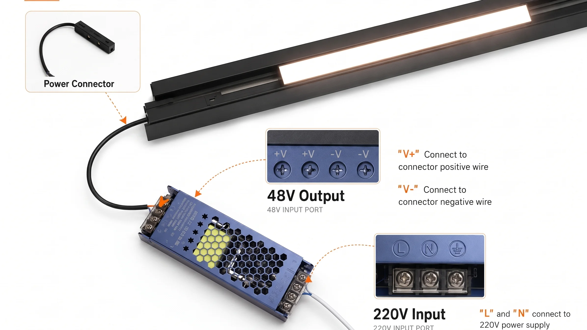
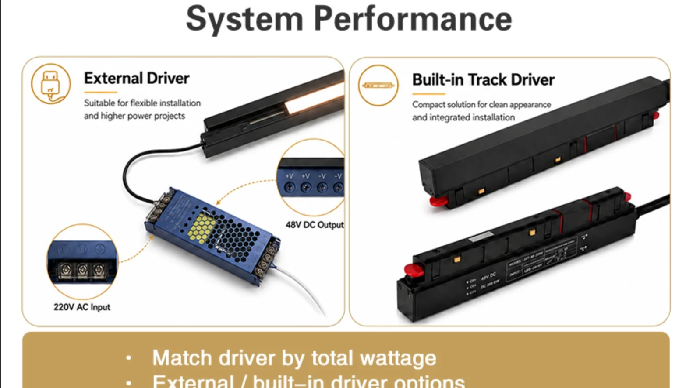

Where Should You Place the Driver for 48V Magnetic Track Lighting?
495| 502| 503| 504|
505|
504|
505| In many 48V magnetic track projects, the track and light modules are selected correctly, but the installation still becomes difficult because the 48V magnetic track driver placement and power feed were not planned before ceiling work started.
506| 507|The result: last-minute ceiling cuts, difficult maintenance access, voltage drop, or expensive rework.
508| 509|This guide covers where to place the driver, how to plan the power feed position, and what to confirm before installation — so your project runs smoothly from the first fix.
510| 511|Why Driver Position Matters Before Installation
512| 513|A 48V LED driver is not something you can hide anywhere. Its position affects several critical aspects of the installation:
514| 515|-
516|
- Space requirement. A typical 150–300W driver is not a small component — it measures roughly 280–350mm long, 60–80mm wide, and 35–45mm high — so it needs a dedicated enclosure or ceiling cavity with enough space. 517|
- Heat dissipation. Drivers generate heat during operation. Enclosed in a tight space without airflow, they overheat, reduce lifespan, or trigger thermal protection. 518|
- Maintenance access. Drivers can fail. If the driver is buried inside a sealed ceiling, replacing it means cutting through drywall. An access panel solves this at the framing stage for almost nothing — adding one later costs 10× more. 519|
- Cable length to the track. The distance between driver and track feed point adds resistance. A long cable run means voltage drop before the power even reaches the track — reducing overall track lighting driver position efficiency. 520|
- Dimming and control wiring. DALI, 0-10V, and smart controls require extra control wires between the driver and the control system. These must be routed during installation. 521|
- Ceiling type. Recessed and trimless ceilings are the most difficult to modify after installation. Once closed, adding a driver access point or relocating a feed requires cutting into finished surfaces. 522|

525| 526|Common Driver Positions for 48V Magnetic Track Lighting
527| 528|| Driver Position | 532|Suitable For | 533|Notes | 534|
|---|---|---|
| Inside ceiling with access panel | 539|Hotels, villas, retail projects | 540|Best for maintenance — easy to service when needed | 541|
| Inside track cavity | 544|Clean appearance, small systems | 545|Limited space — typically max 60–100W | 546|
| Near track end | 549|Short simple runs | 550|Easy wiring, but longer distance increases LED track driver location voltage drop risk | 551|
| Central electrical box | 554|Large commercial projects | 555|Needs proper 48V track circuit planning and distribution | 556|
| Cabinet / service area | 559|Retail and hospitality | 560|Easy access — works if distance to track is under 2–3m | 561|
Never permanently seal the driver in a ceiling area without maintenance access. This is especially important for trimless ceilings, recessed track, hotel corridors, villa living rooms, and retail ceilings — where cutting into the finished surface later is disruptive and expensive.566| 567|

568| 569|How to Choose the Power Feed Position
570| 571|The power feed position determines how far voltage travels along the track and how evenly fixtures perform. It should be decided together with the driver location, because the feed point affects cable routing, track length, fixture concentration, and ceiling structure.
572| 573|-
574|
- End feed — Power enters at one end. Simple, suitable for short runs. 575|
- Mid-point feed — Power enters at the centre. Voltage travels half the distance in each direction. 576|
- Dual-end feed — Power enters from both ends. Best for long or high-load runs. 577|
The right magnetic track power feed position depends on where the driver is placed, how the cable runs are routed, where fixtures are concentrated on the track, and what ceiling structure allows.
580| 581|For detailed load calculation, fixture limits per feed point, and voltage drop planning, read: How Many Lights Can You Install on a 48V Magnetic Track Without Voltage Drop?582| 583|
One Track Run Does Not Always Mean One Circuit
584| 585|This is one of the most commonly overlooked details in commercial track lighting circuit projects.
586| 587|A long magnetic track may look continuous on the ceiling, but electrically it can be divided into several circuits — each with its own driver, its own feed, and its own control group.
588| 589|| Project Situation | 593|Suggested Circuit Planning | 594|
|---|---|
| 3–4m short track | 599|1 driver / 1 circuit | 600|
| 6–8m medium track | 603|1–2 circuits depending on total wattage | 604|
| 10–12m long track | 607|2–3 circuits recommended | 608|
| Retail store or showroom | 611|Divide by lighting zones, not track length | 612|
| Hotel corridor | 615|Split by area for easier maintenance | 616|
Splitting a long track into multiple circuits gives you higher total load capacity, independent zone control, redundancy if one driver fails, and smaller drivers that are easier to install and maintain.
621| 622|Dimming and Smart Control Must Be Confirmed Before Wiring
623| 624|The dimming method must be confirmed before the driver is selected and wiring is routed. Each method requires different driver compatibility and control wiring:
625| 626|-
627|
- Non-dim / On-Off 628|
- DALI (needs 2 extra control wires) 629|
- 0-10V (analogue — needs 2 control wires) 630|
- Triac (phase-cut — common in retrofit) 631|
- Tuya / Zigbee (wireless — no extra control wires, needs gateway placement) 632|
- CCT tunable (needs separate controller per channel) 633|
- Separate group control (each zone needs its own control pair) 634|
Planning dimmable magnetic track wiring at the start is far cheaper than pulling extra cables after the ceiling is closed.
637| 638|For a full comparison of smart dimming and control options, read: Mastering Smart Lighting Control: DALI, 0-10V, and Wireless Protocols639| 640|
Pre-Installation Checklist for Contractors and Specifiers
641| 642|| Item to Confirm | 646|Why It Matters | 647|
|---|---|
| Track layout | 652|Determines track length, feed points, and circuit zones | 653|
| Fixture quantity | 656|Helps calculate total load | 657|
| Fixture wattage | 660|Determines correct driver capacity | 661|
| Driver location | 664|Affects wiring, maintenance access, and heat dissipation | 665|
| Ceiling type | 668|Impacts installation method and access options | 669|
| Dimming method | 672|Affects driver choice and control wiring | 673|
| Access panel | 676|Makes future track lighting maintenance access possible — essential for sealed ceilings | 677|
| Future expansion | 680|Keeps spare driver capacity for added fixtures later | 681|
Common Mistakes That Cause Rework
686| 687|-
688|
- Driver hidden without access panel. A failed driver in a sealed ceiling costs hours of labour to replace. An access panel costs 10 minutes to install at framing stage. 689|
- Driver too far from the track. Long cable runs add voltage drop before power even reaches the track. Keep the driver accessibility track lighting distance under 2–3m. 690|
- Long track powered from one end only. 5m+ runs on end feed will have noticeable dimness at the far end. Use mid-point or dual-end feed. 691|
- Dimming method confirmed after wiring. Choosing DALI after standard wiring is installed means pulling new cables through finished ceilings. 692|
- No spare capacity for future lights. A fully loaded driver leaves no room for expansion. Leave 20% headroom. 693|
FAQ: 48V Track Driver and Power Feed Planning
697| 698|Planning a 48V magnetic track project?
716|Send us your ceiling layout, track length, fixture list, driver location, and control requirements. We can help check driver capacity, power feed position track lighting layout, and circuit planning before installation.
717|如果你正在做酒店、别墅、零售店或展厅项目，可以把天花图、轨道长度、灯具数量、功率和控制方式发给我们，我们可以帮你提前检查电源容量、供电点和回路规划，避免安装后返工。
718| Get Project Check → 719|